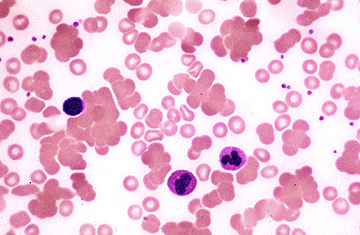

Peripheral blood smear showing red blood cell agglutination in a patient with cold agglutinin disease

The blood smear shows marked red blood cell agglutination into irregular clumps.
Courtesy of Carola von Kapff, SH (ASCP).
Graphic 50522 Version 8.0
Normal peripheral blood smear

High-power view of a normal peripheral blood smear. Several platelets (arrowheads) and a normal lymphocyte (arrow) can also be seen. The red cells are of relatively uniform size and shape. The diameter of the normal red cell should approximate that of the nucleus of the small lymphocyte; central pallor (dashed arrow) should equal one-third of its diameter.
Courtesy of Carola von Kapff, SH (ASCP).
Graphic 59683 Version 5.0